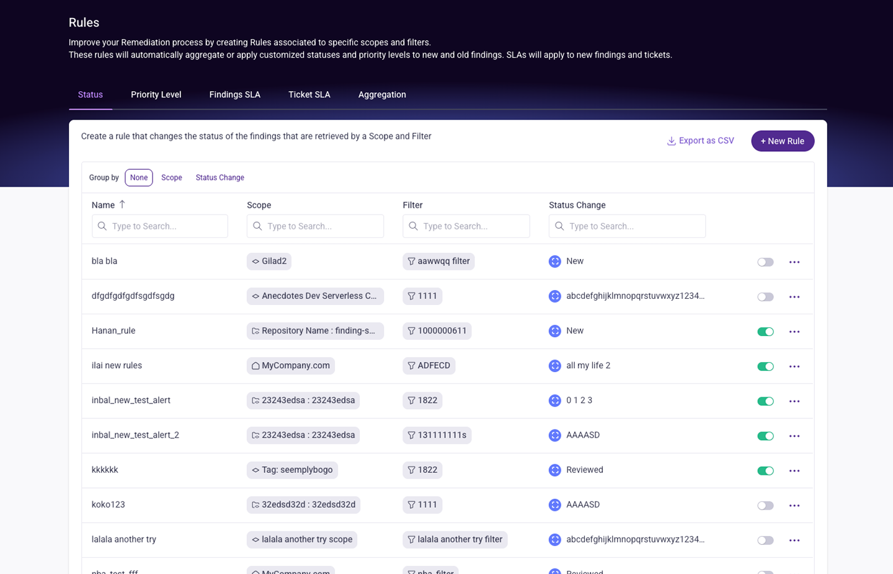
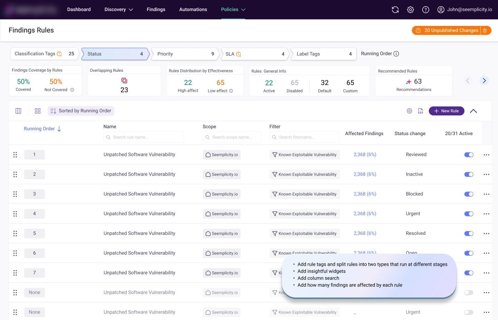
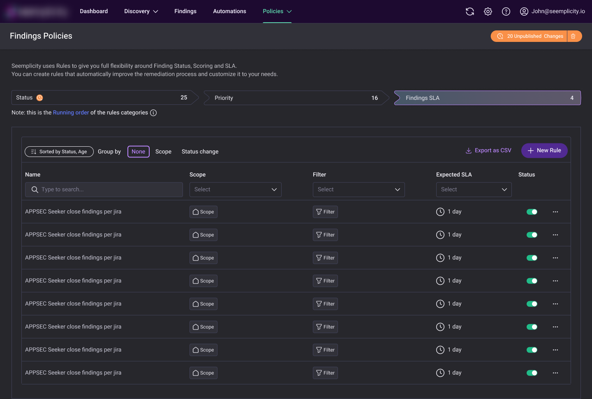
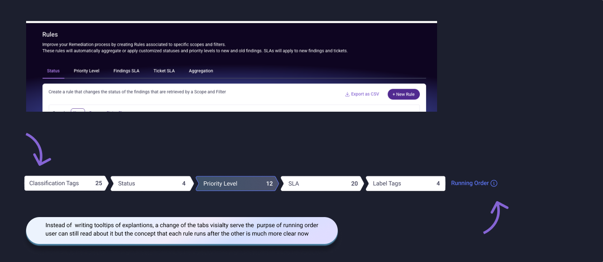
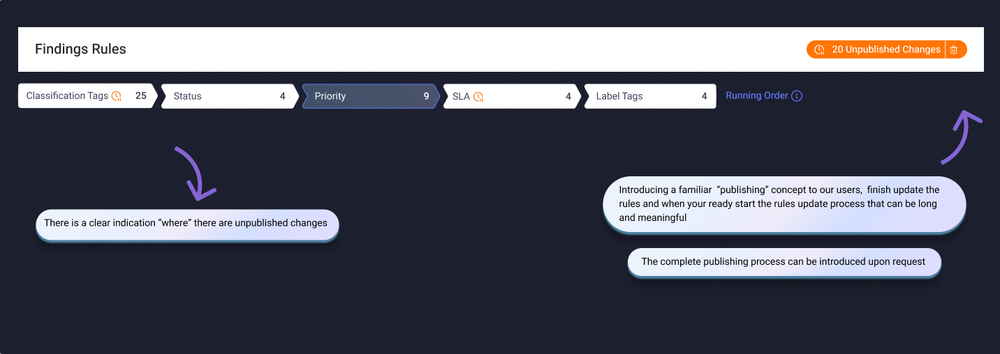
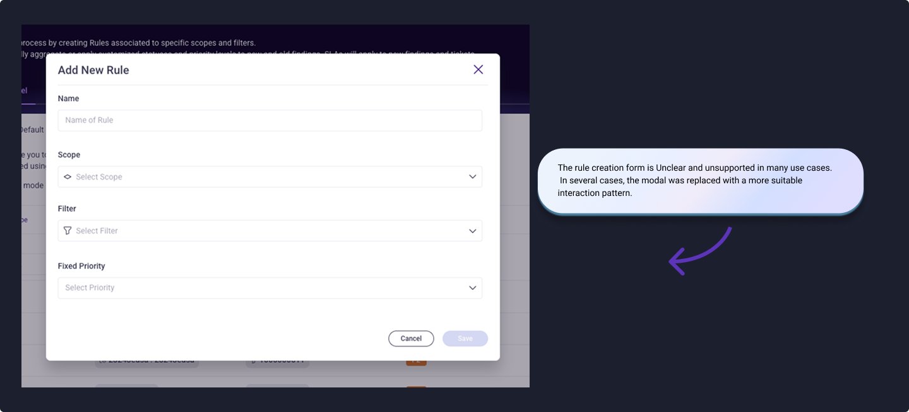
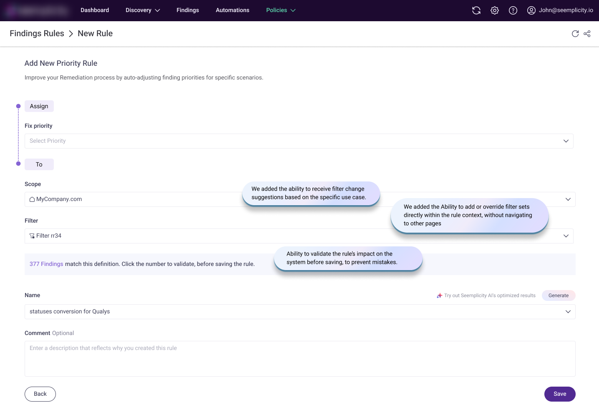
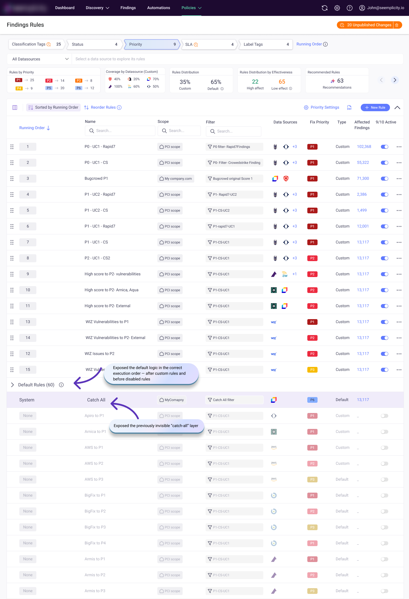
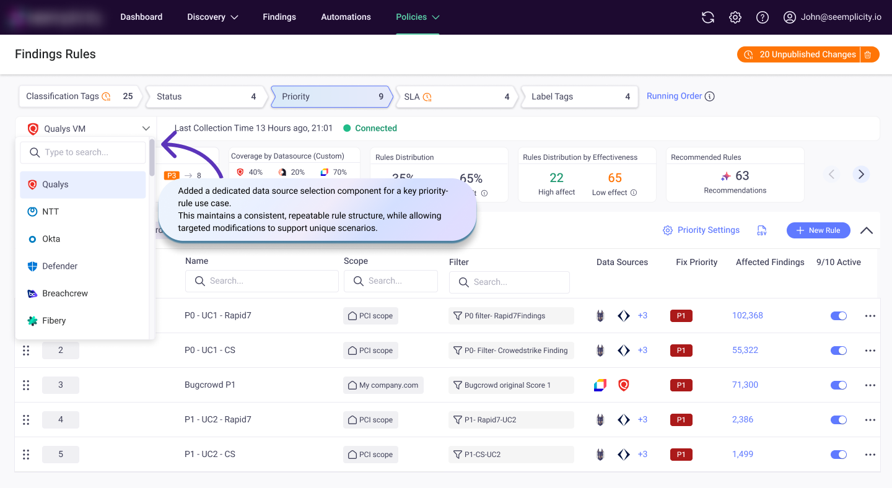

← Back to Projects
Rules Facelift
Added new abilities, made rule logic easier to understand, and upgraded the overall visual experience.
What are we trying to fix?
- Lack of clarity on how rules operate and their execution order.
- Updating each rule requires excessive time, effort, and cost.
- The system has an outdated look and feel.
- Default rules impact findings but are not visible in the UI.
- Some rules include exceptions and special cases that are not supported in the UI, causing user dissatisfaction.
- Rule management capabilities are limited, including the inability to control the execution order of rules of the same type.
Before

After

Dark mode (of course!)
MVP is slightly different due to engineering constraints

Let's break it down

Updating each rule requires excessive time, effort, and meaningful calculation cost

Outdated look & feel? Time for a glow-up ✨

The Form, Reimagined
Luxurious. Clean. Sleek. A rule form that finally feels like it belongs in 2026. 💎

Surfacing the Invisible
Default rules impact findings but are not visible in the UI.

Taming the Edge Cases
Some rules include exceptions and special cases that are not supported in the UI, causing user dissatisfaction.
